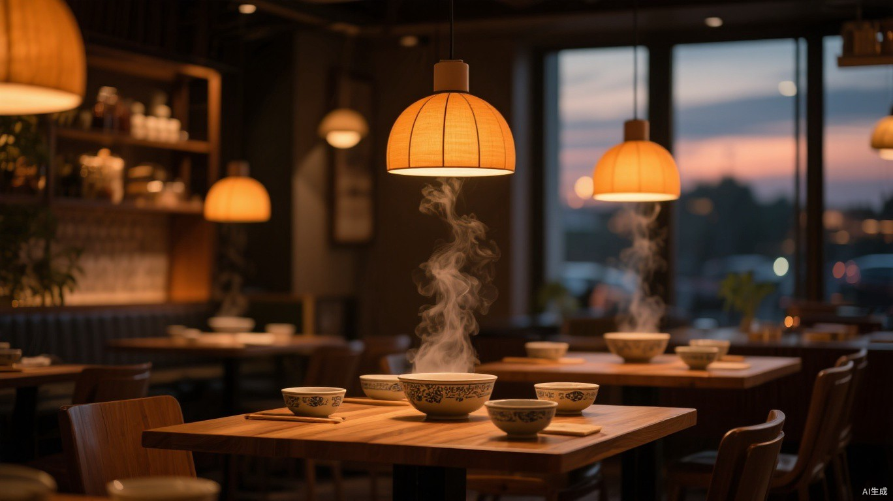
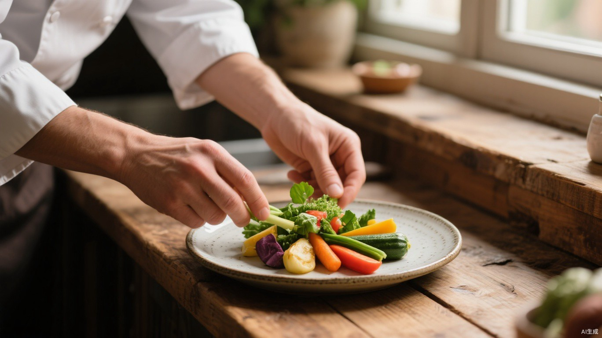

山椒脆皮鸡
¥68外皮现炸酥脆，山椒清香带一点麻，蘸自熬酱汁最好吃。
招牌

食材当天采买，卖完就收工。
不追求多，只把每一道做稳。
VISIT · 到店
四人以下可直接到店，六人以上建议提前一天电话预约。
营业时间
午市最后点单 14:00，晚市最后点单 21:00。
正在确认营业状态…
地址与联系
以上为演示信息，正式上线前请替换为真实门店资料。
FAQ · 常见问题
四人以下可直接到店，高峰时段可能需要等位；六人以上建议提前一天电话预约，我们会为你留好位置。
有的。炭火烤时蔬、五谷杂粮饭、蒜香毛豆等都是素食；点单时告知忌口，厨房可以调整辣度与咸淡。
当然可以。店内备有儿童餐具与宝宝椅，室外座位欢迎携带宠物，进店后请牵好绳。
园区地下停车场可停车，消费满额可减免两小时；地铁 2 号口出来步行约 5 分钟即可到店。